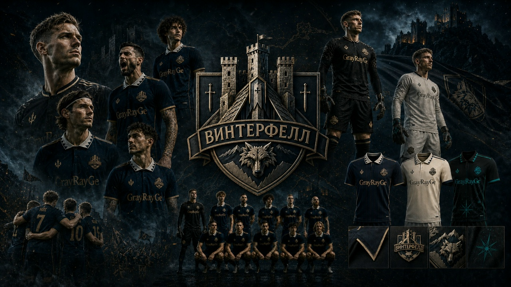

Состав команды
Игроки, на которых строится развитие клуба
Основу команды составляют игроки, на которых строится игра клуба: от надежного вратаря и устойчивой линии обороны до мобильной полузащиты и острой группы атаки.
